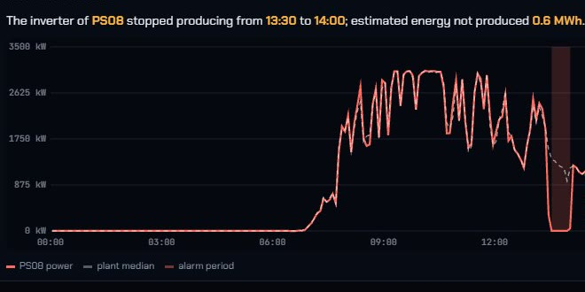
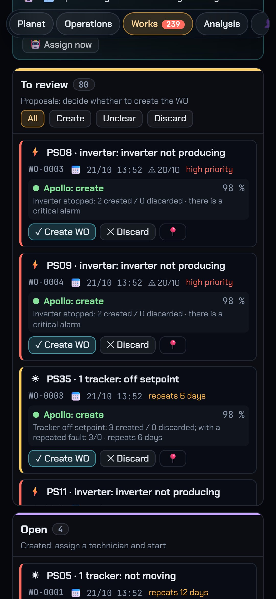
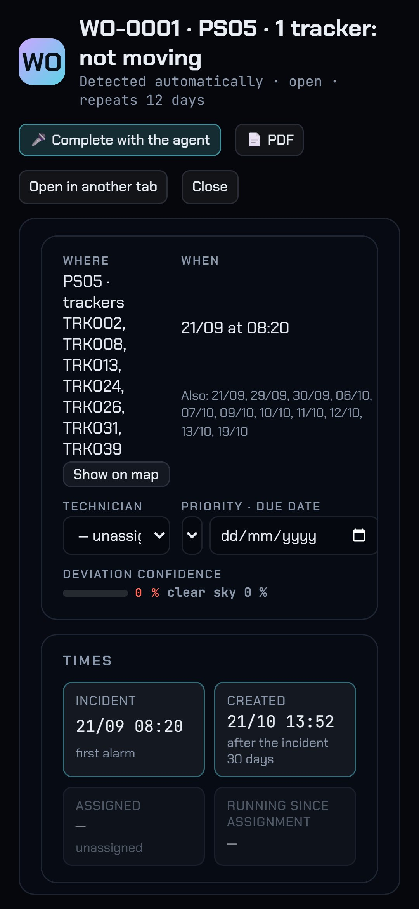
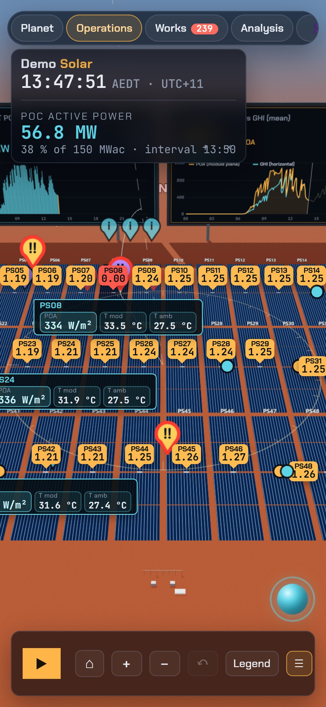
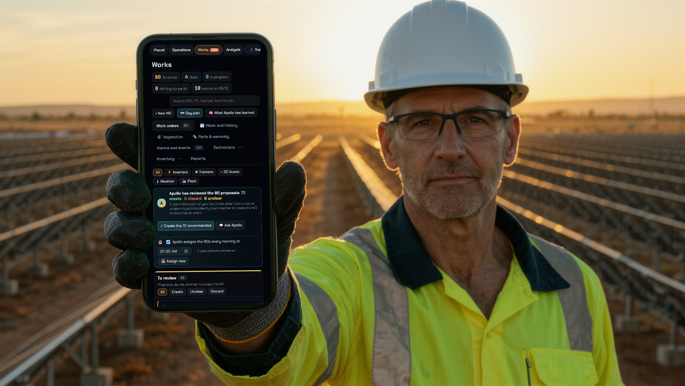
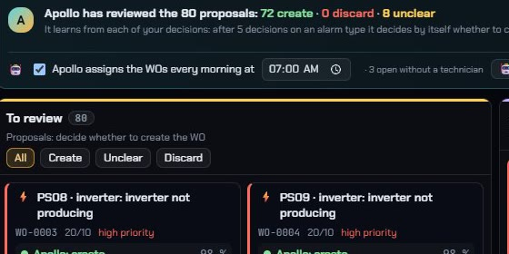
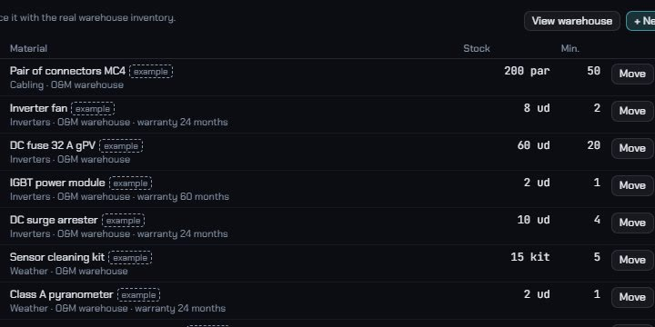
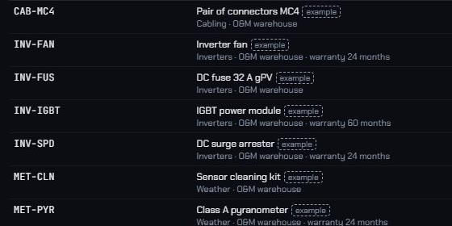

AnalysisFinds the loss and puts a number on it
- Detects stopped inverters, weak DC buses and trackers off setpoint
- Estimates the energy not produced for each incident
- Answers questions about any hour of the day, with figures
Your plant in 3D, replayed from your SCADA. Alarms turned into work orders. And Apollo, an AI agent that knows every tracker and does the paperwork. All on one screen.
Real screens from HeliOS on a utility-scale plant: a full day replayed from SCADA, the work order board, Apollo's review and the analysis behind every loss.
Real screens from HeliOS.
Technicians open HeliOS on their phone over the plant network. Same data and same work orders as the office, laid out for one hand and bright sun.





Apollo reads the same data as your team: SCADA, weather, satellite, alarms, work orders and stock. It proposes, explains why, and waits for a person to decide.

Analysis
Work orders
Inventory & purchasing
WarrantiesHeliOS runs on a PC at the plant or on a laptop off site, with the app, the database and the SCADA processing on that machine. It connects to your data APIs and has no control privileges over the SCADA. Apart from that data connection, only a few features, such as Apollo's AI model and backups, use the internet.
Tell us which plant you operate. We'll run the demo on a day of your own SCADA data, so you see your trackers, your alarms and your losses.
HeliOS was built and tested on real SCADA data from a utility-scale solar farm.